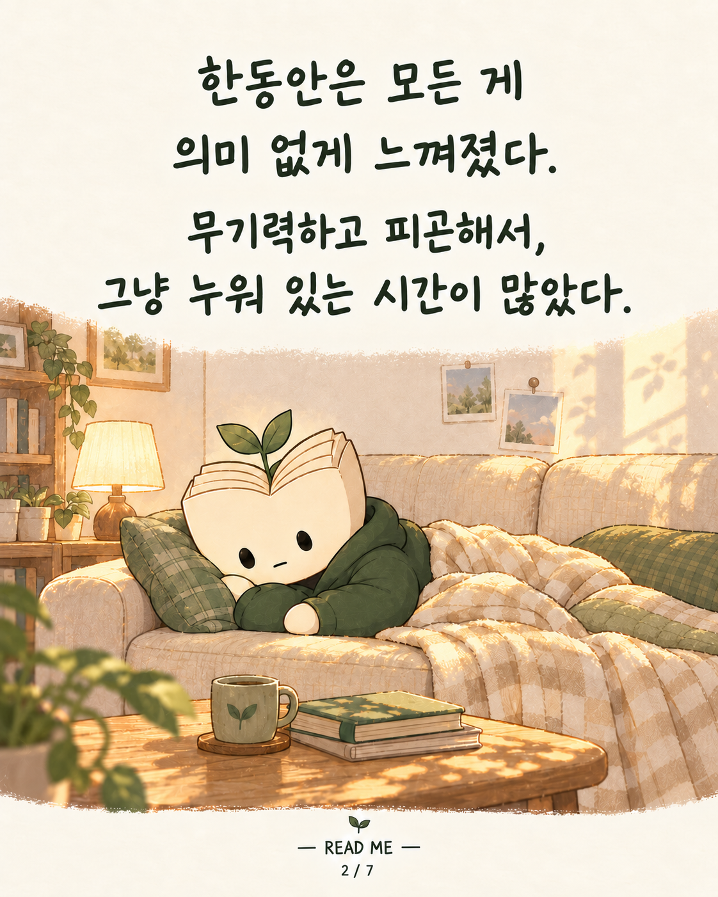
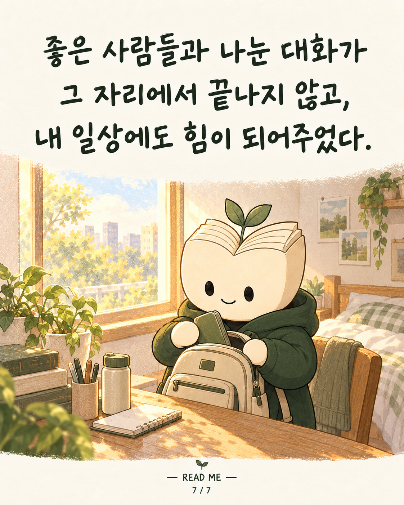

무기력하고 피곤해서 그냥 누워 있는 시간이 많았다. 독서토의에 나가 내 생각을 솔직하게 나누면서, 오랜만에 재미있는 일을 찾은 기분이 들었다. 이야기하다 보면 시간이 금방 갔고, 돌아오면 마음이 한결 평온했다. 퇴근 후에도 무언가에 몰입할 의지가 생기는 날들이 있었다. 좋은 대화는 모임에서 끝나지 않았다. 내 일상으로 돌아와서도 힘이 되어주었다. #README #리미 #독서모임 #일상의변화 #좋은대화